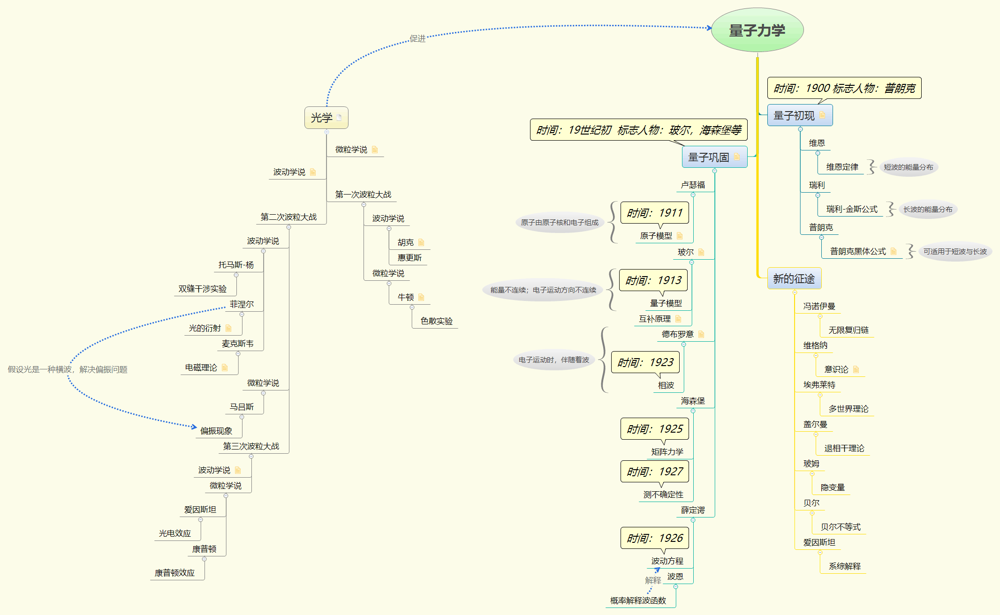

量子力学简史
此篇文档由《上帝掷骰子吗》粗略整理而成，如有不当之处，还望不吝指教，自不胜感激！
光学发展
量子力学的诞生与光学研究有着紧密的联系，甚至可以说对光的研究直接催生出了量子力学。这部分历史大致可以分为三个阶段：
第一次波粒大战
波动学说代表人物：胡克，惠更斯
微粒学说代表人物：牛顿（色散实验）
第二次波粒大战
波动学说代表人物：托马斯杨（双缝干涉），菲涅尔（衍射），麦克斯韦（电磁理论）
微粒学说代表人物：马吕斯（偏振现象，而波动学说假设光是一种横波，解决此问题）
第三次波粒大战
波动学说代表人物：德布罗意（相波）
微粒学说代表人物：爱因斯坦（光电效应，提出光量子），康普顿（康普顿效应）
而爱因斯坦的光量子假说，实质上是引入了普朗克量子假设的结果，而量子力学的诞生也正是由普朗克拉开了序幕。
量子力学发展
量子力学发展也可以分为三个阶段：
量子初现
普朗克研究维恩定律与瑞利-金斯定律的基础上，假设能量是不连续的，创造性地提出了量子的概念，并通过普朗克方程描述了单个量子的能量。
$$
E = hv
$$量子巩固
这是量子力学发展的黄金时期，涌现出了相当多的优秀年轻科学家。
卢瑟福：于1911年提出原子模型，原子由原子核和电子组成。但是这种模型在经典电磁学理论中，由于不断释放辐射能量，最终将会崩塌。
玻尔：于1913年，完成原子模型三论文，并在之后提出量子模型。在此模型中，能量与电子运动方向均不连续；为了解决波粒问题，提出互补原理，即电子是波还是粒子，取决于我们观测的方式。
德布罗意：于1923年提出相波的概念，发现电子以速度v运动时，伴随着速度为c^2/v的波。
$$
\lambda = (c^2/v_1)/(mc^2/h)=h/mv_0
$$
海森堡：于1925年提出矩阵力学（值得一提的是，海森堡本人重新发明了矩阵）；1927年提出测不确定性，永远不可能同时观测到一个电子的动量及位置。薛定谔：于1926年提出波动方程，事实证明其与海森堡的矩阵力学实质上是同一体系，波恩认为其中的波函数是一种概率分布。
狄拉克：于1928年将相对论引入量子力学，提出狄拉克方程。
新的征途
对于量子力学背后的解释，除了哥本哈根解释外，还有很多其他观点，下述只列举部分较为著名的解释观点。
冯诺依曼：无限复归链
维格纳：意识论
埃弗莱特：多世界理论
盖尔曼：退相干理论
玻姆：隐变量
贝尔：贝尔不等式
量子力学仍然在发展，相信终有一天，我们能够真正抓住这个幽灵的秘密！
